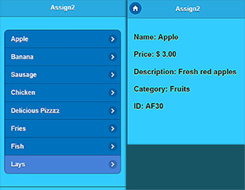
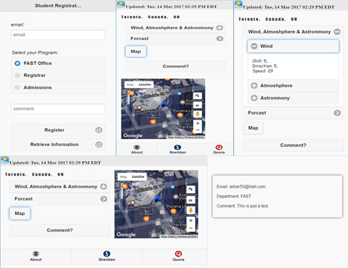
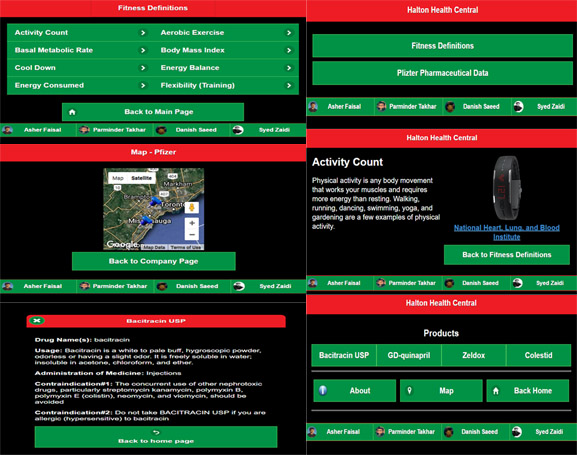

JQuery
This page showcases my knowledge of Jquery along with Ajax, XML and JSON. All of these were school assignments and also my final project which was with a team.
Retrieving from a XML File
For this assignemnt we were to make our own XML file and make a basic web application that would get all the information from the XML file and load it up. Pretty easy!

Retriving from a JSON File
For this assignment we were provided with a JSON file and we were supposed to get all the information from the JSON file. The web application was supposed to fit in a mobile portrait mode and perform all the task with minimal scrolling.

Final Project
Below is the final projet me and my partners made. Our task was to use all our knowledge from the semester and make a web application that would get all the information from the XML and JSON files provided to us and try to design it in a way that there is very minimal scrolling involved. The appliaction works in a landscape mode and utilizes all the space.
